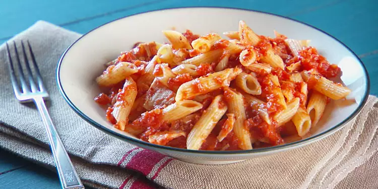

Tuna Tomato Pasta

Description
This lovely pasta dish is very simple to make yet tastes amazing. It's perfect for a quick and easy, yet still healthy meal and requires very few ingredients!
Difficulty: Easy
Serves: 2
Prep: 5mins
Cook: 15-20mins
Ingredients
- 100g pasta, per person
- 400g tin, chopped tomatoes
- 145g tin tuna
- 1 garlic clove, crushed
- 1/2tbsp olive oil
- 1/2tbsp tomato puree
- sprinkle of mixed herbs, salt, pepper
Steps
- Heat oil in a large pan.
- Add garlic to hot oil, cook for 2 minutes.
- Combine garlic with tomato puree, cook for further few minutes.
- Pour whole tin of chopped tomatoes into pan, mix.
- Mash/crush tomatoes into a sauce with potato masher.
- Leave to simmer for 15 minutes, stirring occasionally.
- While that simmers, bring pasta to boil.
- Cook pasta for 10 minutes or until soft.
- When sauce has finished, turn heat to low until pasta is ready.
- Strain pasta, leave strained pasta in pot.
- Add tomato sauce to pasta pot, mix.
- Mix tinned tuna into pasta, serve!